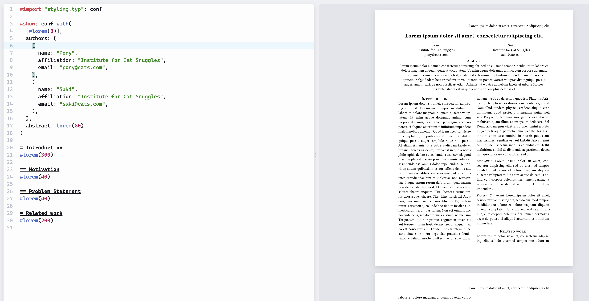
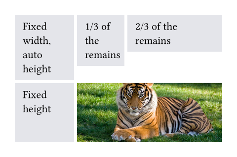
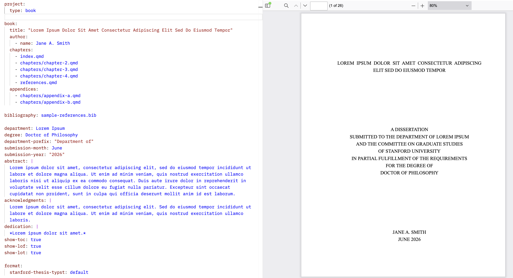
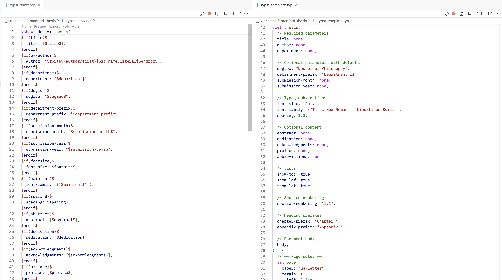

2026-03-31

| Feature | Markdown | Typst |
|---|---|---|
| Heading 1 | # Title |
= Title |
| Heading 2 | ## Title |
== Title |
| Bold | **text** |
*text* |
| Italic | *text* |
_text_ |
| Ordered list | 1. item |
+ item |
| Link | [text](url) |
#link("url")[text] |
| Image |  |
#image("path") |
| Blockquote | > text |
#quote[text] |
| Horizontal rule | --- |
#line(length: 100%) |
| Strikethrough | ~~text~~ |
#strike[text] |
| Comment | <!-- comment --> |
// comment |
func(arg: value, arg: value)#: #func(arg: value, arg: value)[], e.g. #func(arg: [Text -- to evaluate])#func(arg: value)[text to modify]| Function | Controls | Common Parameters |
|---|---|---|
page() |
Page size, margins, headers/footers | paper, margin, numbering, header, footer |
text() |
Font and text appearance | font, size, fill, weight, lang |
par() |
Paragraph spacing and indentation | justify, leading, first-line-indent |
heading() |
How headings are numbered and displayed | numbering, outlined |
document() |
PDF metadata | title, author, date |
set) vs specific (show: set) modification#text(blue, size: 14pt, weight: "bold")[The cat sat on the espresso machine]#set text(fill: blue, size: 14pt, weight: "bold")#show heading: set text(fill: blue, size: 14pt, weight: "bold")// We use `rect` to emphasize the
// area of cells.
#set rect(
inset: 8pt,
fill: rgb("e4e5ea"),
width: 100%,
)
#grid(
columns: (60pt, 1fr, 2fr),
rows: (auto, 60pt),
gutter: 3pt,
rect[Fixed width, auto height],
rect[1/3 of the remains],
rect[2/3 of the remains],
rect(height: 100%)[Fixed height],
grid.cell(
colspan: 2,
image("tiger.jpg", width: 100%),
),
)
typst compile your_file.typexercises.qmdexercises.qmdshow and templatesshow and templates#import "another_file.typ": function_name, other_functionfunc.with() simplifies imported show templates: show: func.with(arg: value)#import "@preview/fletcher:0.5.8" as fletcher: diagram, node, edgeexercises.qmdformat: typst#block() commandquarto create extension format and select the base formattemplate.qmd, _extension.yml, typst-show.typ, and typst-template.typtypst-template.typshow: func.with(...)typst-show.typshow: func.with(...) command

exercises.qmd